The Rmarkdown for this document is: https://github.com/rnabioco/bmsc-7810-pbda/blob/main/_posts/2023-12-06-class-6-intro-to-ggplot2-part2/class-6-intro-to-ggplot2-part2.Rmd
Goals for today
New dataset: Iris
Plotting the categorical data from iris measurements
Box plots and violin plots
Frequency and density plots
Using stat layers
Adding additional annotations
Axis, scales, and coordinate Systems
New dataset diamonds
Faceting plots
Storing plots as variables
Color palettes
Applying themes
Combining plots with patchwork
The Iris Dataset
For this class we are going to use a new built in dataset that involves the measurements of Iris flowers. In particular the measurements involve the width and length of two structures of the flower: the petal and the sepal. Here is an overview of flower structure.

The Iris dataset is classically used in machine learning and classification projects. Three species of iris were included in this study: iris setosa, iris versicolor, and iris virginica. Measurements were taken in 1936 by famous statistician RA Fisher known for the Student’s t-test and F-distribution. http://archive.ics.uci.edu/ml/datasets/Iris

Let’s look at the this new dataset with head. You can see that it is
in tidy format with each observation being a new row.
head(iris) Sepal.Length Sepal.Width Petal.Length Petal.Width Species
1 5.1 3.5 1.4 0.2 setosa
2 4.9 3.0 1.4 0.2 setosa
3 4.7 3.2 1.3 0.2 setosa
4 4.6 3.1 1.5 0.2 setosa
5 5.0 3.6 1.4 0.2 setosa
6 5.4 3.9 1.7 0.4 setosaTo get a list of the species in this study we can look at all the
unique() entries in the Species column.
unique(iris$Species)[1] setosa versicolor virginica
Levels: setosa versicolor virginicaEach one of the species is represented and now we have the exact names
as written by each measurement. To get the number of measurements for
each species we can use the summary() function.
summary(iris$Species) setosa versicolor virginica
50 50 50 We can begin by looking at the relationships between some of the measurements by looking at a scatter plot. Here we have Sepal.Length on the x-axis and Sepal.Width on the y-axis.
ggplot(iris, aes(x = Sepal.Length, y = Sepal.Width)) +
geom_point()Exercise: Despite this showing all the data points. How is this not very informative? As a review of last class, add to this plot to make it more informative?
Exercise: Remake this scatterplot but this time for Petal.Width and
Petal.Length and plot ONLY the iris virginica species data points.
Plotting the Categorical Data
Species data points with geom_point
Typically we can look at the distribution of a particular measurement
value based on the category of the measurement, in this case the
species. In this way we can make comparisons between the species. As
before we can use a geom_point_() to plot the values for each species.
ggplot(iris, aes(x = Species, y = Sepal.Width)) +
geom_point()While this does show a basic distribution of Sepal.Width for each Species, many of the points that have the same value are actually hidden! One way we can improve on this is by adding a bit of jitter or random horizontal position to each point.
ggplot(iris, aes(x = Species, y = Sepal.Width)) +
geom_jitter()
Notice that if you rerun the plot the points are in different locations. The space added by the jitter is randomly generated everytime. Don’t expect them to look the same everytime!
Side note: You can also use geom_point() geometry function with the
position = position_jitter() setting and it will generate the same
plot as with geom_jitter()
You can also tighten the range of the jitter by specifying a width.
ggplot(iris, aes(x = Species, y = Sepal.Width)) +
geom_jitter(width=0.1)The Boxplot
A frequently used plot that is used to better descriptively show this
type of data is a boxplot. We can generate a box plot of this data
simply by adding a second geom layer called geom_boxplot(). This way
we keep the point layer but also have the boxplot.

Here we can add a geom_boxplot layer to our existing jittered
scatterplot.
ggplot(iris, (aes(x = Species, y = Sepal.Width))) +
geom_jitter() +
geom_boxplot()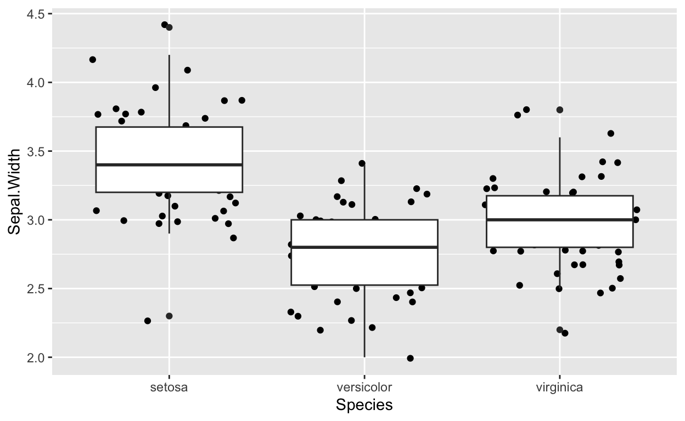
Exercise: Many of the points are hidden behind the boxplot. Try changing the order of the layers to see if it matters. What is another way you could fix this?
Violin Plot
Another type of frequently used plot is the violin plot. This plot shows a continuous density distribution.
ggplot(iris, aes(x = Species, y = Sepal.Width)) +
geom_violin() +
geom_jitter()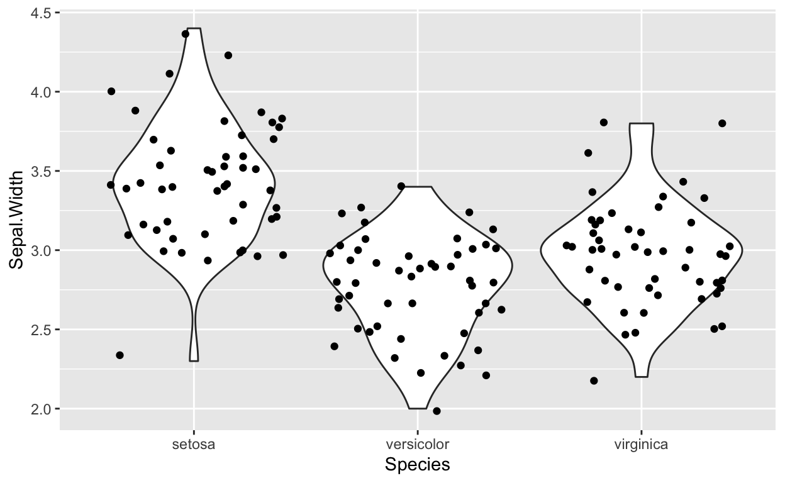
Stats Layers
Stats or statistics layers allows us to calculate certain metrics about
our data and potentially visualize them. First we will look at some of the geom that use stats in their plots.
Frequency and Density Plots
For instance here is a new type of plot that calculates frequency of counts across all measurements of
Sepal.Width. It uses a stat to count the number of measurements at specific values. We could also show the color aes to visualize all the species.
ggplot(iris) +
geom_freqpoly(aes(x = Sepal.Width))geom_dotplot() is another way to visualize representative counts. Note that settings stackgroups = TRUE allows you to see all of the dots by stacking them vertically on top of one another without overlap. It uses a stat to count the number of measurements at specific values and represents them as a dot.
ggplot(iris) +
geom_dotplot(aes(x = Sepal.Width, fill = Species), stackgroups = TRUE)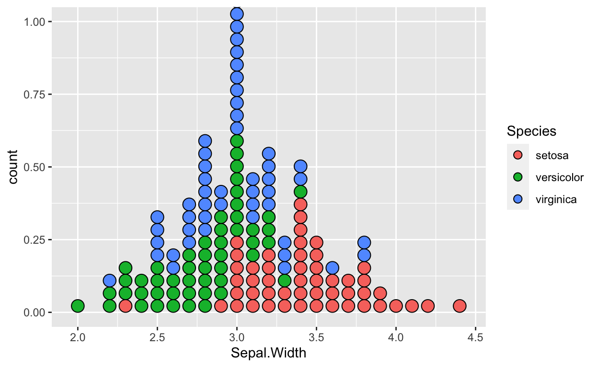
Density plots can overlap to show a comparison between groups and visualize distribution. It uses a stat to calculate a density metric.
ggplot(iris) +
geom_density(aes(x = Sepal.Width, color = Species))Finally we have a traditional histogram representing the counts of specific measurement values as above but plotted as a bar plot. It also uses a stat to count the number of measurements at these specific values.
ggplot(iris) +
geom_histogram(aes(x = Sepal.Width))Underneath the hood the geom_histogram function is using a stat
function called bin this essentially taking each measurement and
placing it in a specific sized category and calculating the frequency of
this occurrence. We can modify either the binwidth or the number of
bins arguments to modify this behavior. For instance if there are 50
measurements from say 1 to 4.5. This range would be divided by the
number of bins. Each measurement value would fall into one of these bins
and a count would be added for that bin.
ggplot(iris) +
geom_histogram(aes(x = Sepal.Width), stat = "bin", bins = 10)Stat Functions
Stats layers are additional information that we calculate and add to the
plot. Essentially every geom_ function that we have been seen utilizes
calculations to produce the plots. Each of these geom_ functions has
an equivalent stat_ function. It is beyond the scope of this class to
get into the details of all of these stat functions. Here we will look
at a particular function called stat_summary that we can use to plot
some summary statistics.
ggplot(iris, aes(x = Species, y = Sepal.Width)) +
geom_jitter() +
stat_summary(fun = "mean",
geom = "point",
color = "red")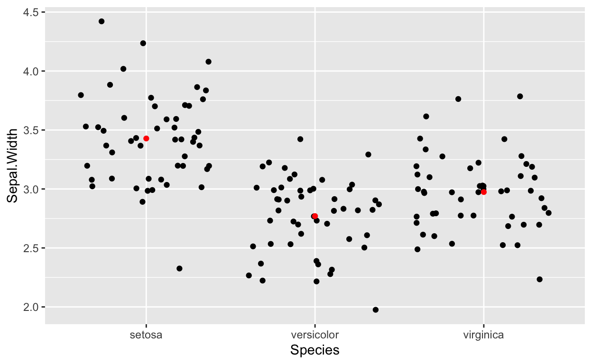
Some of the other options for stat_summary:
geoms: point, errorbar, pointrange, linerange, crossbar
funs: mean, median, max, min
ggplot(iris, aes(x = Species, y = Sepal.Width)) +
geom_jitter() +
stat_summary(fun = "mean",
geom = "crossbar",
width = 0.5,
color = "red")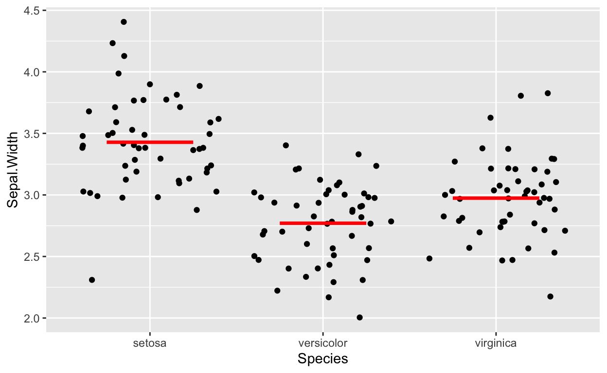
We can combine multiple stat_summary layers to add additional
information.
ggplot(iris, aes(x = Species, y = Sepal.Width)) +
geom_jitter() +
stat_summary(fun = "mean",
geom = "crossbar",
width = 0.5,
color = "red") +
stat_summary(fun = "median",
geom = "crossbar",
width = 0.5,
color = "blue")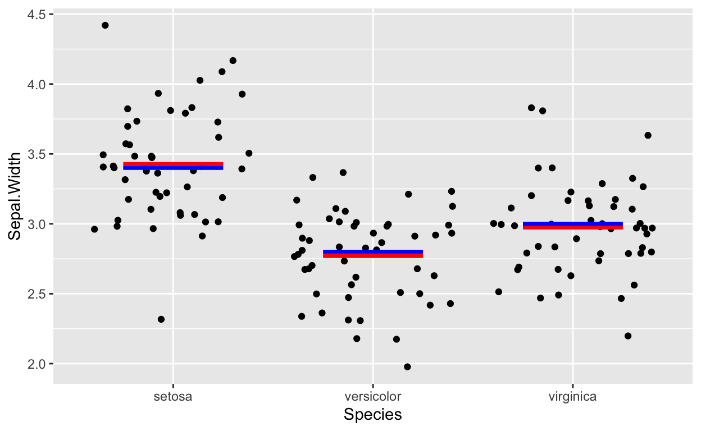
Plotting the standard error and the confidence intervals
Plotting the standard error.
ggplot(iris, aes(x = Species, y = Sepal.Width)) +
geom_jitter() +
stat_summary(geom = "errorbar",
fun.data = mean_se)To calculate the standard deviation and produce the confidence intervals
you can pass mean_cl_normal to the fun.data argument. Note you may
need to install the Hmisc package to get this working.
install.packages("Hmisc")
ggplot(iris, aes(x = Species, y = Sepal.Width)) +
geom_jitter() +
stat_summary(geom = "errorbar",
fun.data = mean_cl_normal)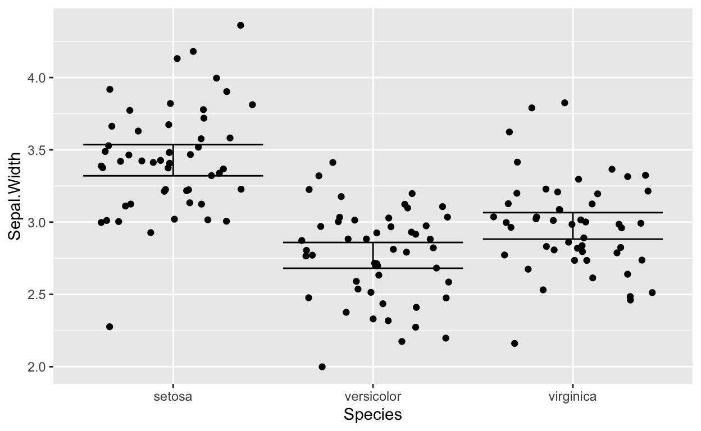
Annotations
Annotations are easy ways to add extra emphasis to your plots. It can be much more efficient to have them placed on your plots programatically rather than trying to add them later with Photoshop or Illustrator.
Using geom_text()
geom_text() is an easy way to play text on a plot to annotate. We can even use its aes() function to add column information to the plot like so.
ggplot(iris, aes(x = Sepal.Length, y = Sepal.Width)) +
geom_point() +
geom_text(aes(label=Species))Not very practical. Let’s look at the documentation to get some better ideas.
?geom_textThere are several options we can add to make things a little neater.
ggplot(iris, aes(x = Sepal.Length, y = Sepal.Width)) +
geom_point() +
geom_text(aes(label=Species), nudge_y = .1, check_overlap = T, size = 3)We can also manually place text anywhere we would like in the plot. This could be a way to annotate whole groups or parts of the visualization.
The annotate function
The annotate function can be used to pass specific types of geometries that you can manually draw on your plot.
?annotateHere is an example of drawing a rectangle.
ggplot(iris, aes(x = Sepal.Length, y = Sepal.Width)) +
geom_point(aes(color= Species)) +
annotate("rect", xmin=5.5, xmax=6.5, ymin=2.5 , ymax=3.2, alpha=0.2, color="blue")Using a segment geom to produce an arrow. Notice how we need to add the arrow function.
Drawing intercept lines with geom_lines
You can add horizontal or vertical lines to show cut offs.
ggplot(iris, aes(x = Sepal.Length, y = Sepal.Width)) +
geom_point(aes(color= Species)) +
geom_hline(yintercept=4, color = "orange", size = 1)ggplot(iris, aes(x = Sepal.Length, y = Sepal.Width)) +
geom_point(aes(color= Species)) +
geom_vline(xintercept=7, color = "orange", size = 1)Can add a slope line.
ggplot(iris, aes(x = Sepal.Length, y = Sepal.Width)) +
geom_point(aes(color= Species)) +
geom_abline(slope = .5, intercept = 1)
Filtering data as annotation
You can also filter your data during the annotation process and use that as a way to clearly highlight features of interest.
Here by limiting the color to specific measurements.
ggplot(iris, aes(x = Sepal.Length, y = Sepal.Width)) +
geom_point() +
geom_point(data = filter(iris, Sepal.Width > 3.25), aes(color = Species))And here by limiting the text annotation to specific measurements.
Exercise: Plot a scatter plot of the Petal.Length and Petal.Width and color by the species of iris. Place a rectangle around the group of points representing the data from the setosa species. Place text above the rectangle that displays “smallest flower”.
Axis, Scales, and Coordinate Systems
Scales are ways of modifying how the data and the coordinates are shown. When you run this code below there are actually several default hidden scales functions being added.
ggplot(iris, aes(x = Petal.Length, y = Petal.Width)) +
geom_point()
Notice how there are three scale function layers added. These are actually being run above but are hidden by default. If you run this version you will get the same plot as above.
ggplot(iris, aes(x = Petal.Length, y = Petal.Width)) +
geom_point() +
scale_x_continuous() +
scale_y_continuous() +
scale_colour_discrete()Basically scale_x_ and scale_y_ functions can be used to modify the respective axis appearance and type. For instance we can change the x axis to be on a log scale by using scale_x_log10(). Great way to visualize without having to transform the actual data.
ggplot(iris, aes(x = Petal.Length, y = Petal.Width)) +
geom_point() +
scale_x_log10()You can also reverse an axis.
ggplot(iris, aes(x = Petal.Length, y = Petal.Width)) +
geom_point() +
scale_x_reverse()You can manually set the x and y axis range by using the xlim() and ylim() functions.
ggplot(iris, aes(x = Petal.Length, y = Petal.Width)) +
geom_point() +
xlim(0,10) +
ylim(0,5)The third default scale in the plot was scale_colour_discrete(). This type of scale modifies how the color can be mapped across the data.
ggplot(iris, aes(x = Species, y = Sepal.Width, color= Sepal.Length)) +
geom_jitter() +
scale_color_gradient(low = "blue", high = "red")#use autocomplete to all the scales options
#scale_Last class I showed that you could quickly change the axis to swap the
coordinates. Here is another way to do that by interacting with the
coordinate layer using the coord_flip() function.
ggplot(iris, aes(x = Species, y = Sepal.Width)) +
geom_violin() +
geom_jitter() +
coord_flip()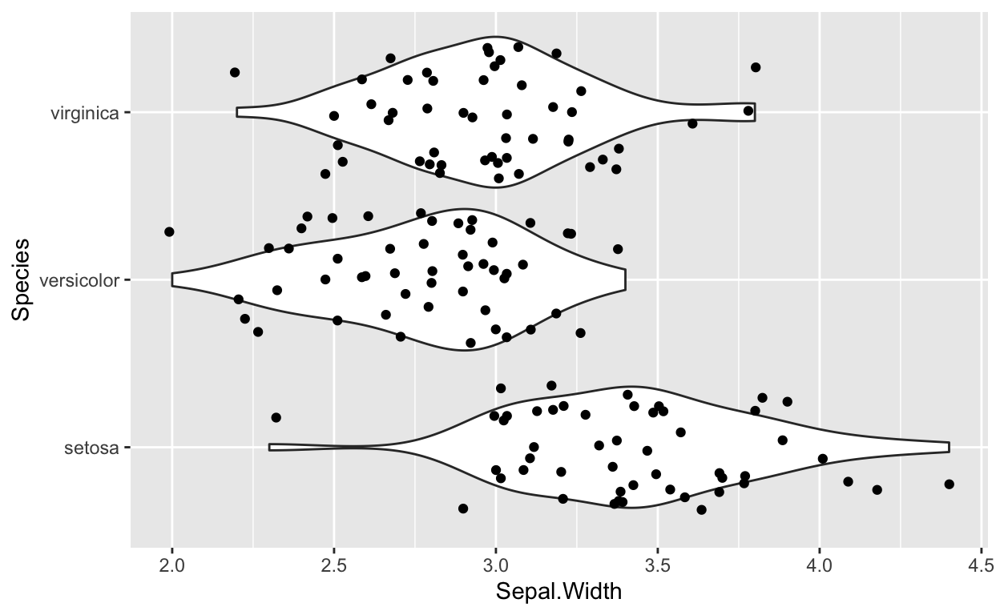
Dataset: Diamonds

A dataset containing the prices and other attributes of almost 54,000 diamonds.
head(diamonds)# A tibble: 6 × 10
carat cut color clarity depth table price x y z
<dbl> <ord> <ord> <ord> <dbl> <dbl> <int> <dbl> <dbl> <dbl>
1 0.23 Ideal E SI2 61.5 55 326 3.95 3.98 2.43
2 0.21 Premium E SI1 59.8 61 326 3.89 3.84 2.31
3 0.23 Good E VS1 56.9 65 327 4.05 4.07 2.31
4 0.29 Premium I VS2 62.4 58 334 4.2 4.23 2.63
5 0.31 Good J SI2 63.3 58 335 4.34 4.35 2.75
6 0.24 Very Good J VVS2 62.8 57 336 3.94 3.96 2.48A data frame with 53940 rows and 10 variables:
price = price in US dollars ($326–$18,823)
carat = weight of the diamond (0.2–5.01)
cut = quality of the cut (Fair, Good, Very Good, Premium, Ideal)
color = diamond color, from D (best) to J (worst)
clarity = a measurement of how clear the diamond is (I1 (worst), SI2, SI1, VS2, VS1, VVS2, VVS1, IF (best))
x = length in mm (0–10.74)
y = width in mm (0–58.9)
z = depth in mm (0–31.8)
depth = total depth percentage = z / mean(x, y) = 2 * z / (x + y) (43–79)
table = width of top of diamond relative to widest point (43–95)
ggplot(diamonds, aes(x=carat, y=price)) +
geom_point()
Exercise: Review the last class. Make a histogram showing the distribution of diamond prices. Color by the cut of the diamond. What statements can you make about the relationships shown.
Exercise: More review. Create a freqpoly plot showing the frequency count of the carat and the color as the cut of diamond. Does this help explain the ideal cut price?
There are so many data points in this dataset as seen by our original scatterplot. Before moving on we can subset this dataset by using sample to grab a random selection of 1000 rows for downstream analysis.
Introducing the Facet
One way that we can take an attribute from your data and expand it to
plot it into multiple plots, one for each level, letting you view them
separately. Just as a cut diamond has different flat edges called
facets, in ggplot this type of breaking out the levels of the data into
multiple plots is called “faceting”. One of the easiest ways to do this
is by using the facet_wrap() function.
ggplot(subset_diamonds, aes(x=carat, y=price, color=cut)) +
geom_point() +
facet_wrap(~cut, nrow = 1)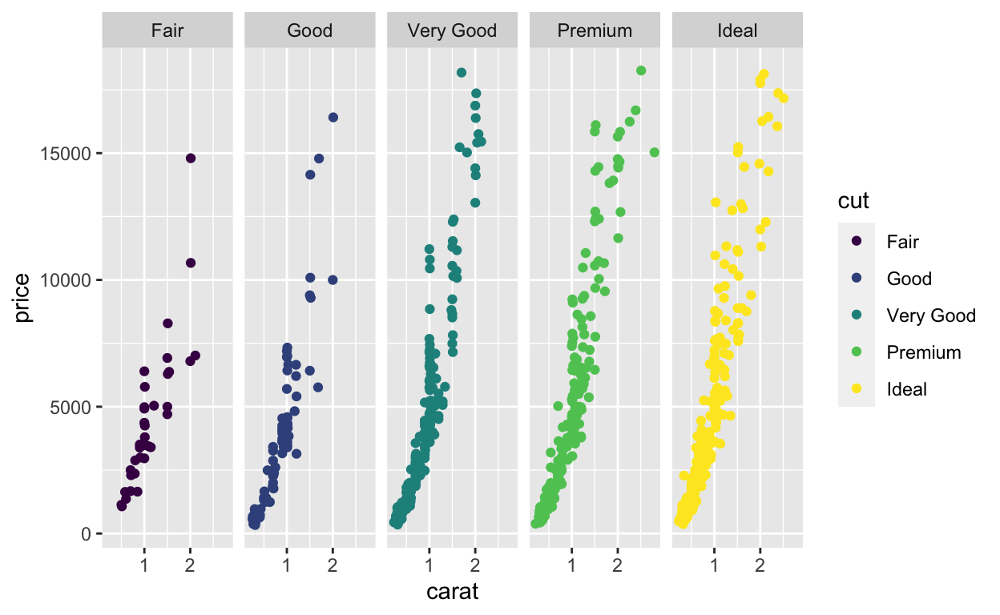
The second type of facet function is the facet_grid()
ggplot(subset_diamonds, aes(x=carat, y=price, color=cut)) +
geom_point() +
facet_grid(clarity ~ cut)This is a good time to introduce a way to modify the size of the figure
being displayed in RMarkdown. We can edit the curly braces to give
special instructions for the cell. Kent has previous showed this to you
as well. Here we can add fig.width=20 to increase the width of the
figure. You can also try fig.height. There are numerous ways you can
influence the plot using this format and most of them start with the
fig. prefix.
ggplot(diamonds, aes(x=carat, y=price, color=cut)) +
geom_point() +
facet_grid(clarity ~ cut)Exercise: Use the dataset from last class iris. Make a scatterplot of
Sepal Width and Sepal Length and color by the Species. Use a
facet_wrap to break out the Species.
Storing Plot Objects
One concept that can be useful is that you can assign ggplot plots to a variable just like any other object in R. This can allow you to reuse the plot over and over again simply by calling the variable name you saved the plot. You can also continue to add layers to these plots and can we a quick way to test and compare different versions of a plot.
p1 <- ggplot(subset_diamonds, aes(x=carat, y=price, color=cut)) +
geom_point()Notice that nothing was plotting when you run this code. Instead the
plot is saved to the p1 variable. We can visualize this plot anytime
simply by calling the variable.
p1We can add any additional layers just as we would when building the
plot. Let’s look at a facet_wrap of the clarity.
p1 + facet_wrap(~clarity)We changed our mind and now we want to compare this to the same base
plot but use a facet_grid breaking out the diamond color.
p1 + facet_grid(clarity~color)Color Palettes
You can easily change the types and ranges of colors being used in your plots. Here is the default color palette:
ggplot(subset_diamonds, aes(carat, price, color = clarity)) +
geom_point()We can use the scale_color_brewer() to set a different type of
palette. There are many default options to choose from and maybe more
custom ones you can install.
https://r-graph-gallery.com/38-rcolorbrewers-palettes.html
ggplot(subset_diamonds, aes(carat, price, color = clarity)) +
geom_point() +
scale_color_brewer(palette = "RdYlBu")
ggplot(subset_diamonds, aes(carat, price, color = clarity)) +
geom_point() +
scale_color_brewer(palette = "Accent")ggplot(subset_diamonds, aes(carat, price, color = clarity)) +
geom_point() +
scale_color_manual(values = c("red", "blue", "green", "yellow", "purple", "white", "black", "gray"))Themes
One of the most fun aspects of ggplot is the ability to quickly change the entire look of your plots with themes.
ptest <- ggplot(iris, aes(x=Sepal.Width, y=Sepal.Length, color = Species)) +
geom_point() +
facet_wrap(~ Species)
ptestptest + theme_dark()ptest + theme_minimal()ptest + theme_bw()ptest + theme_classic()ptest + theme_void()You can install custom themes….
https://ryo-n7.github.io/2019-05-16-introducing-tvthemes-package/
https://github.com/Mikata-Project/ggthemr
http://xkcd.r-forge.r-project.org/
Combining multiple plots
One useful technique when assembling figures is to be able to stitch
multiple plots together into a single image. There is a special add on
package that allows us to do just that with simple syntax. This package
is called patchwork and will need to be installed as it is not
included in the tidyverse. It can be installed with
install.packages("patchwork"). More info at
https://patchwork.data-imaginist.com/
Save the plots as object variables.
p1 <- ggplot(mtcars) +
geom_point(aes(mpg, disp))
p2 <- ggplot(mtcars) +
geom_boxplot(aes(gear, disp, group = gear))To use patchwork simply place the plus operator to “add” two plots together:
p1 + p2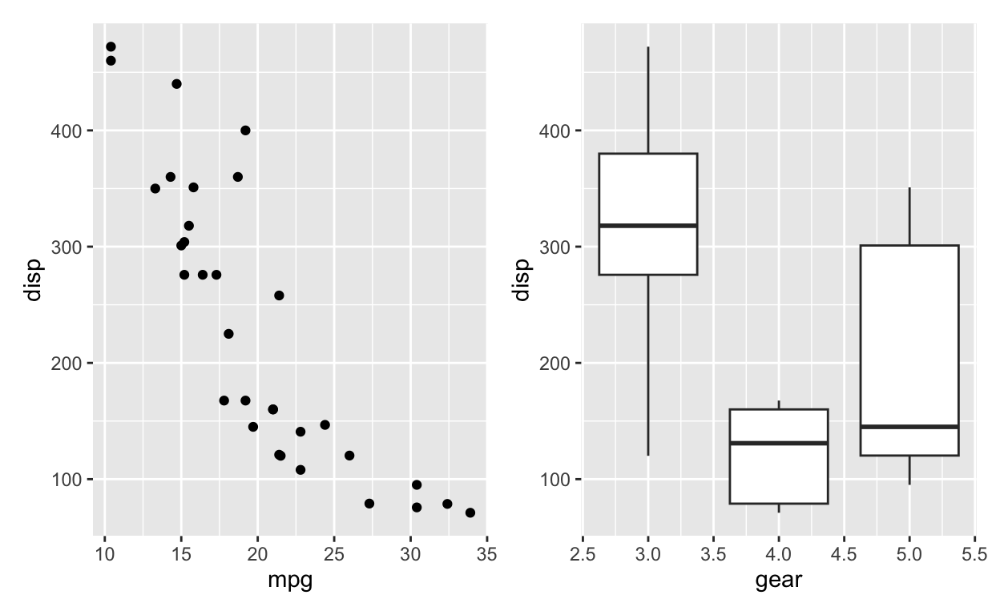
Why stop at just two plots? We can keep adding more.
And use more complex ways of displaying them.
(p1 + p2 + p3) / p4To annotate the whole group we need to use a special plot_annotation()
function:
(p1 | p2 | p3) / p4 +
plot_annotation(
title = 'The surprising truth about mtcars',
subtitle = 'These 3 plots will reveal yet-untold secrets about our beloved data-set',
caption = 'Disclaimer: None of these plots are insightful')You can even automatically add the subplot letter annotations. Publish time!
(p1 | p2 | p3) / p4 +
plot_annotation(tag_levels = 'A')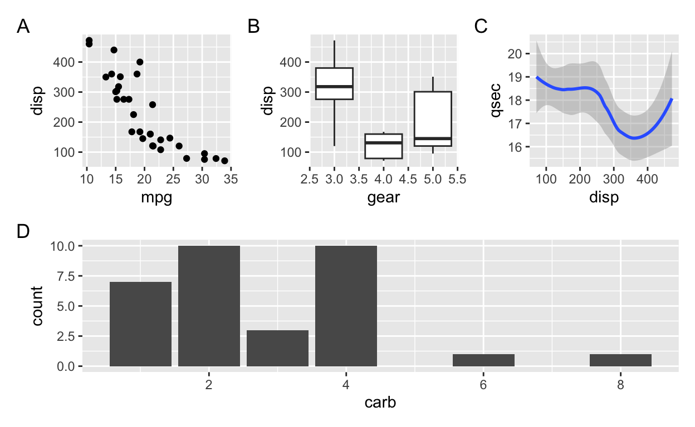
(p1 | p2 | p3) / p4 +
plot_annotation(title = "Figure 1: Motor Trend 1974 Car Stats", tag_levels = 'A')Exercise: Change the order of the plots combined with patchwork so that p4 is in the middle of the top row and p2 is now on the bottom row. See how the plot adapts.
Thanks for listening. Keep on plotting and exploring the world of ggplot2! —
SessionInfo
R version 4.2.2 (2022-10-31)
Platform: aarch64-apple-darwin20 (64-bit)
Running under: macOS Monterey 12.6
Matrix products: default
BLAS: /Library/Frameworks/R.framework/Versions/4.2-arm64/Resources/lib/libRblas.0.dylib
LAPACK: /Library/Frameworks/R.framework/Versions/4.2-arm64/Resources/lib/libRlapack.dylib
locale:
[1] en_US.UTF-8/en_US.UTF-8/en_US.UTF-8/C/en_US.UTF-8/en_US.UTF-8
attached base packages:
[1] stats graphics grDevices utils datasets methods
[7] base
other attached packages:
[1] patchwork_1.1.2 lubridate_1.9.2 forcats_1.0.0 stringr_1.5.0
[5] dplyr_1.1.2 purrr_1.0.1 readr_2.1.4 tidyr_1.3.0
[9] tibble_3.2.1 ggplot2_3.4.2 tidyverse_2.0.0
loaded via a namespace (and not attached):
[1] tidyselect_1.2.0 xfun_0.39 bslib_0.4.2
[4] splines_4.2.2 lattice_0.20-45 colorspace_2.1-0
[7] vctrs_0.6.2 generics_0.1.3 htmltools_0.5.5
[10] viridisLite_0.4.2 yaml_2.3.7 mgcv_1.8-41
[13] utf8_1.2.3 rlang_1.1.1 jquerylib_0.1.4
[16] pillar_1.9.0 glue_1.6.2 withr_2.5.0
[19] RColorBrewer_1.1-3 lifecycle_1.0.3 munsell_0.5.0
[22] gtable_0.3.3 memoise_2.0.1 evaluate_0.21
[25] labeling_0.4.2 knitr_1.43 tzdb_0.4.0
[28] fastmap_1.1.1 fansi_1.0.4 highr_0.10
[31] scales_1.2.1 cachem_1.0.8 jsonlite_1.8.4
[34] farver_2.1.1 distill_1.6 hms_1.1.3
[37] digest_0.6.31 stringi_1.7.12 grid_4.2.2
[40] cli_3.6.1 tools_4.2.2 magrittr_2.0.3
[43] sass_0.4.6 pkgconfig_2.0.3 downlit_0.4.3
[46] Matrix_1.5-1 timechange_0.2.0 rmarkdown_2.22
[49] rstudioapi_0.14 R6_2.5.1 nlme_3.1-160
[52] compiler_4.2.2